Use Case
In the `serverless` way of doing things, we don’t need to think about servers. And so, the capacity planning, scaling, high availability and fault tolerance are automatically taken care by the Cloud provider, in this case AWS. There are multiple services from AWS which follow the serverless model including but not limited to SNS, SQS, Lambda, SES etc. In each of these services we simply need to use them and there is no need to think about servers, we can focus more on the business.
Very often different companies take feedback from their customers. A book publishing company make take the feed back on the newly published book, a cosmetic company on the newly launched product and so on. Once the gather the feedback, they would be using the same thing to tweak the product or how they would be marketing the product.
Till now taking the feedback required creating an EC2 instance, RDS Database etc. But, in this use case we would be using the `serverless` technologies to build up a feedback website. These are services being used and their purpose.
- S3 – For storing the web pages
- DynamoDB – For storing the feedback results
- Cognito – To provide the website access to the backend Database
- IAM – To specify what permissions to be given
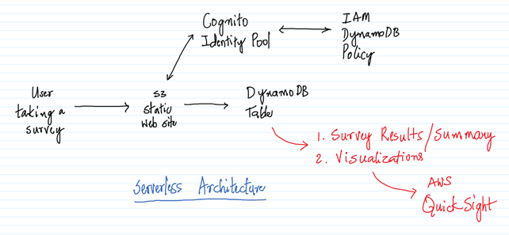
As an extension to this use case, we could have also used AWS QuickSight to do some visualizations using the AWS QuickSight. Maybe we can draw a pie chart on how many customers are thinking about the product in a positive/negative way. AWS QuickSight has already been addressed in one of the previous demos, so we would be leaving it out of the use case.
Serverless is the way to go and the Cloud providers are including a lot of services/features around it, But, as with any other software, it would take some time for them to become mature and gain wide adoption in the industry.
AWS Services: S3, Cognito, IAM, DynamoDB
-- Navigate to the DynamoDB Management Console and click on `Create table`.
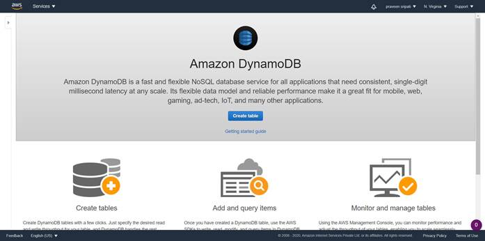
-- Enter the Table name as `survey`, Partition key as `email` and the Sort key as `city`. Click on `Create`.
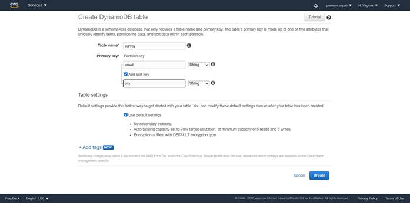
-- A table would be created in DynamoDB as shown below with no items.
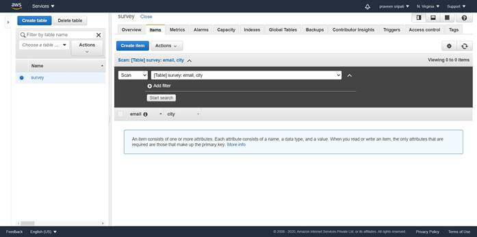
-- Navigate to the `Amazon Cognito` Management Console and click on `Manage Identity Pools`.
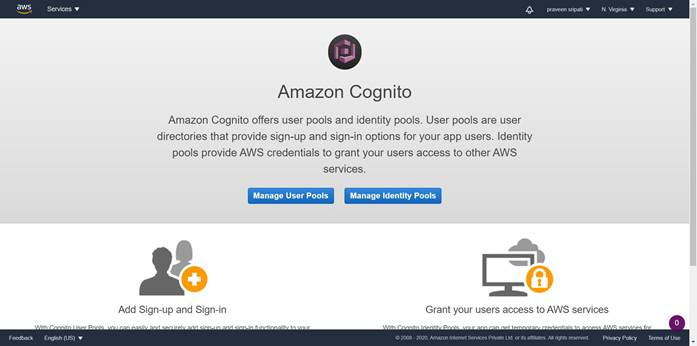
-- Enter the pool name and check `Enable access to unauthorized identities` and click on `Create Pool`.
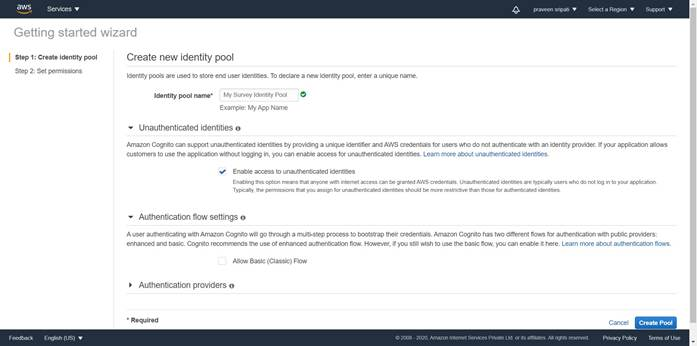
-- Click on `Allow`.
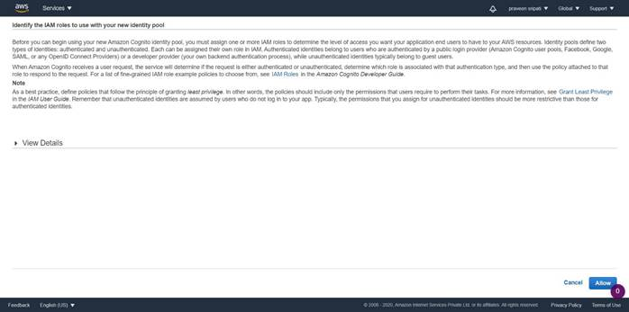
-- Change the platform to JavaScript, note down the `IdentityPoolId`.
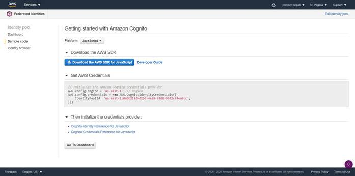
-- Navigate to the IAM Management Console and click on Roles tab. Filter for the Cognito rules and click on the Role which ends with `PoolUnauth_Role`.
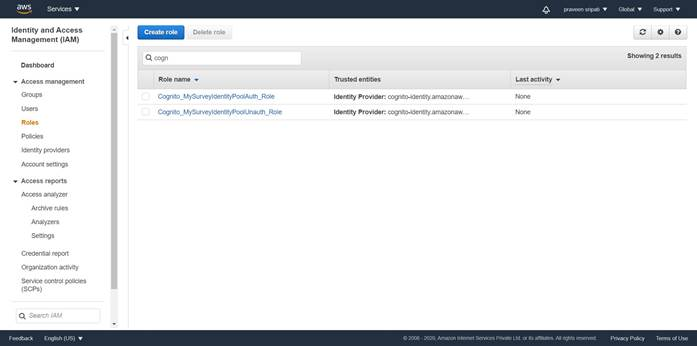
-- Click on `Attach policies`.
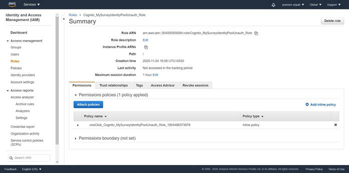
-- Select the `AmazonDynamoDBFullAccess` Policy and click on `Attach policy`.
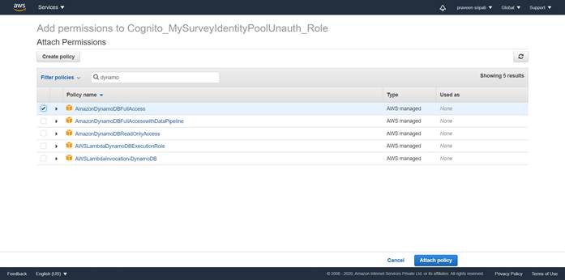
-- The Role would have the policies attached as shown below.
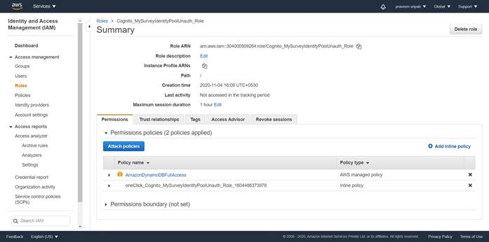
-- Navigate to S3 Management Console and create a Bucket.

-- Go to the `Properties` tab.
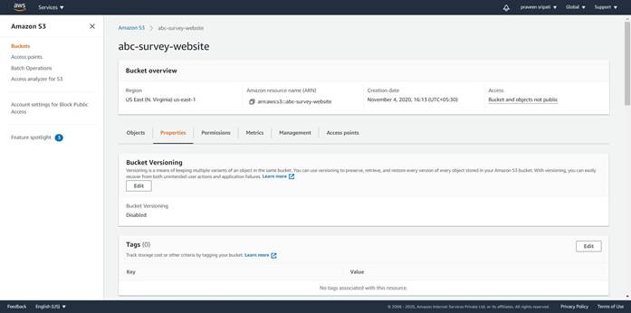
-- Towards the end of the page click on Edit for `Static website hosting`.
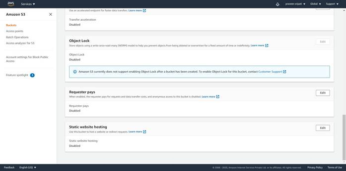
-- Select Enable for `Static website hosting`. For the `Index document` enter `survey.html` and for the Error document` enter `error.html`.
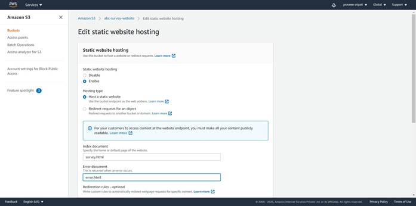
-- Click on `Save changes`.
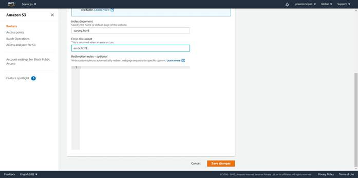
-- Note down the URL at the end. We would be using this to access the web pages in S3 via the browser later.

-- Go to the `Permissions` tab. Click on Edit for `Block public access (bucket settings).
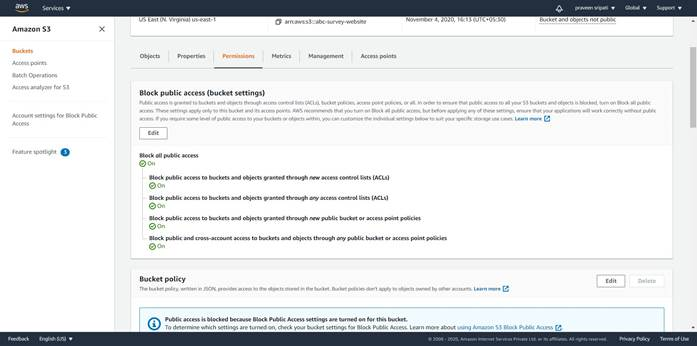
-- Uncheck all the options as shown below and click on `Save changes`.
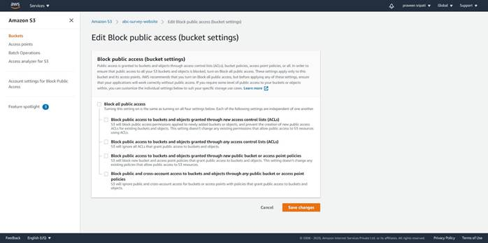
-- Enter `confirm` for the sake of confirmation.

-- In the same page, click on Edit for the `Bucket policy`.
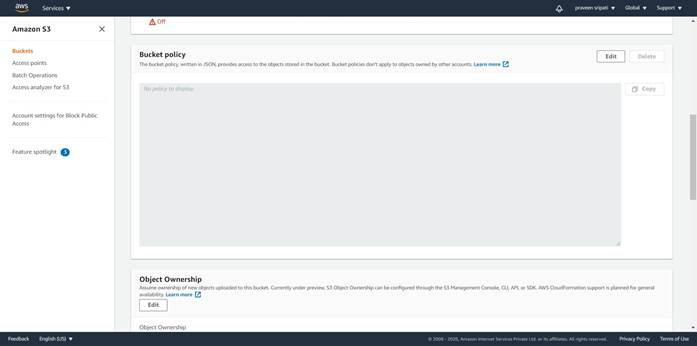
-- Enter the JSON from the attached file into the policy. Make sure to replace the S3 bucket name with the bucket name created in one of the previous step.
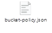
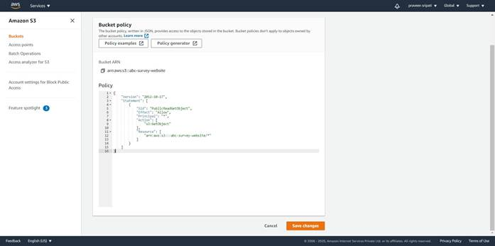
-- Click on the Objects tab. Upload the survey.html and the error.html to the S3 bucket. Make sure the `IdentityPoolId` is modified in the survey.html. Use the one got from the Cognito Console while creating the Identity pool.
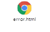
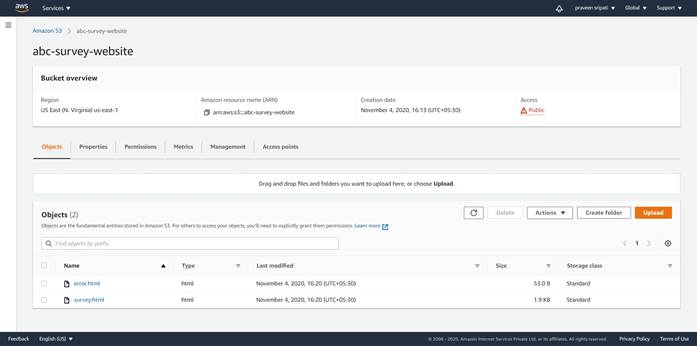
-- Use the browser and navigate to the URL which was got from the S3 Management Console. Enter the email, City and feedback. Click on Submit.
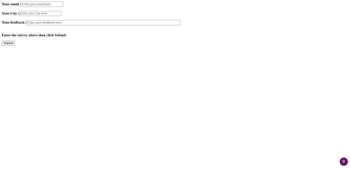
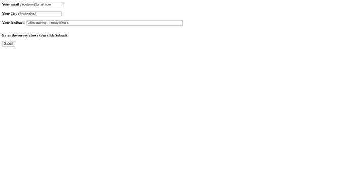
-- If everything works fine, then the message `Thanks for helping with the survey` should be displayed.
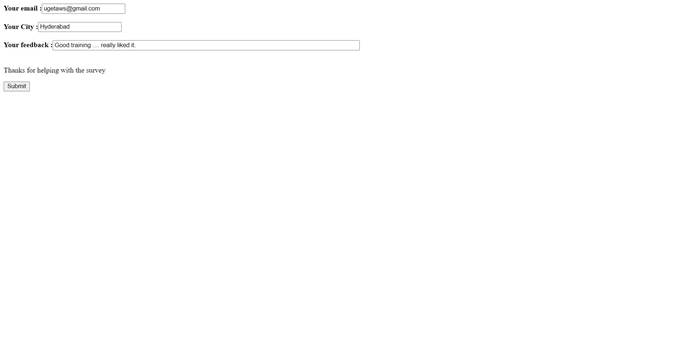
-- Navigate to the DynamoDB Management Console and check for the new Item under the Items tab as shown below. If for some reason if the Item doesn’t appear click on the Refresh button. The survey which we have entered in the feedback form should appear in the DynamoDB for further processing.
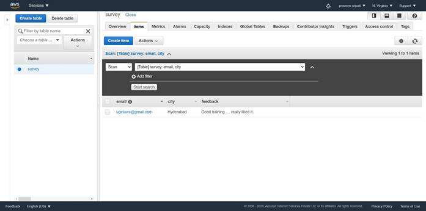
Conclusion
We have observed how to use the Serverless technologies to create a feedback form and the results were stored in DynamoDB for further analysis. In the entire scenario we never talked about talked about EC2 and so called the Serverless architecture.